|
キャスター付重量物の移動・転倒対策に （▲クリックすると詳細へジャンプします。） 2個で耐荷重は200㎏ 200㎏を超える対象物には、設置数を増やしてください。 （▶設置数目安はこちら） |
特徴（KTT-001J/002J 共通）
- 震度7相当に対応 兵庫県南部地震の振動実験をクリア
- 高強度ロープと衝撃吸収ベルトが伸縮することで振動を吸収し、転倒･暴走を防止。
- 貼るだけの簡単設置。ネジ止めは不要。
- キャスター付重量物の内側に設置すれば、見た目もスッキリ。
-
ベルトを外せば、複写機を自由に動かせるので床のお掃除も出来ます。
Pタイルのフロアに
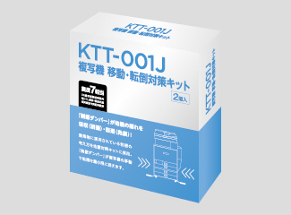
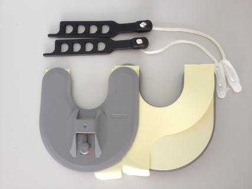
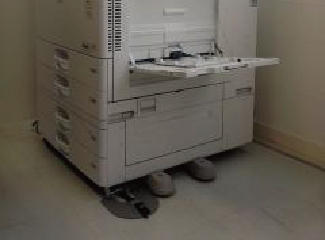
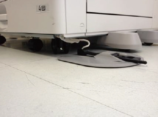
複写機移動･転倒対策キット Pタイル用
フローリング用
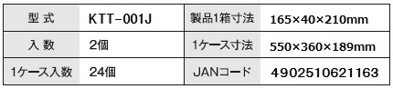
・粘着テープ式
剥離紙をはがして、床面に貼り付けるだけ。
一度剥がしたら、再利用はできません。
|
■取り付け可能な床材 フローリング、Ｐタイル（プラスチックタイル）、クッションフロア、ビニルフロア ■取り付け可能な対象物 キャスター付き機器（耐荷重200ｋｇまで、車両直径100ｍｍ以下）：複写機、家具、テレビ置台、ピアノ（アップライトタイプ）、医療機器 ■取り付けできない床材 カーペット、たたみ、凸凹の多い面、表面に水分・油分等がある床、フッ素・シリコン系等 |
カーペット敷きのフロアに
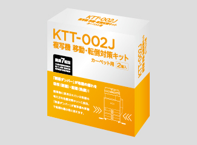
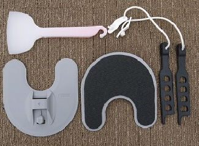
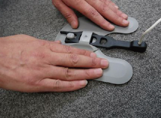
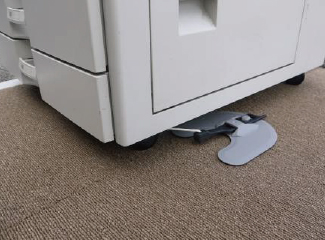
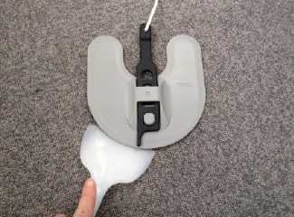
複写機移動･転倒対策キット カーペット用
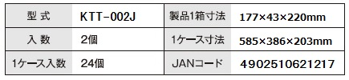
・マジックテープ式
マジックテープ面を、カーペットに貼るだけ。
剥がしても、繰り返し使えます。
・専用のスクレーパーで取り外しも簡単
|
■取り付け可能な床材 タイルカーペット（毛先がループ状のもの）、フェルトタイプカーペット ■取り付け可能な対象物 キャスター付き機器（耐荷重200ｋｇまで、車両直径100ｍｍ以下）：複写機、家具、テレビ置台、ピアノ（アップライトタイプ）、医療機器 ■取り付けできない床材 カットパイルカーペット、フローリング、Ｐタイル（プラスチックタイル）、クッションフロア、ビニルフロア、たたみ、凸凹の多い面、表面に水分・油分がある床、フッ素・シリコン系等 |
設置方法
▲画像クリックで拡大します。
KTT-001J Pタイル用の取付方法については、こちら（PDF）をご覧下さい。
KTT-002J カーペット用の取付方法については、こちら（PDF）をご覧下さい。
動画でご覧になりたい方は、下の画像をクリックしてご覧下さい。
はがし方について
KTT-001Ｊ（Ｐタイル用）につきましては、こちら（PDF）をご参照ください。
KTT-002Ｊ（カーペット用）につきましては、下記「複写機を移動・再設置する際の留意点」のPDFをご参照ください。付属のスクレーパー（へら）をご利用下さい。
複写機を移動・再設置する際の留意点
こちらをご覧ください。
取り付け・使用上のご注意
●取り付け部の確認をしてください。
・設置前にカーペット面、対象物の取り付け部が傷んでいないか確認してください。そのまま取り付けされますと、
本来の性能が発揮されない可能性があります。また、カーペット裏地とその下の床との接着がしっかりしてい
るか確認してください。
・もし接着が弱い場合は、確実に接着していただくようお願いします。
●プレートの取り付けに注意してください。
・カーペット面のプレート取り付け部分に汚れ、ほこり、油分が残っていると、十分な性能が発揮されないことが
あります。
・プレートを設置した際は、上から強く押し付け、しっかりカーペット面に付けてください。
・プレートをカーペット面に設置する場合、高強度ロープが常に引っ張られている状態になりますと、プレートが
はがれる可能性があります。高強度ロープは少したるませるようにプレートの位置を決定してください。（または、
衝撃吸収ベルトの穴位置で調整してください。）
●下記場所での使用は避けてください。
・日光、風雨が直接当たる場所では使用しないでください。
●下記のものの使用は避けてください。
・アルコール、シンナー、ワックス類は製品を変形させるなどのおそれがありますので、使用しないでください。
●作業は十分に注意してください。
・取り付け、取り外し時におけるカーペット、対象物などの破損には責任を負いかねます。
●定期的な点検をお願いします。
・定期的に本製品のプレートがカーペット面よりはがれていないか、衝撃吸収ベルトがフックより外れていないか
確認してください。
●保管場所に注意してください。
・特にお子様の手の届かないところに保管してください。
| ●本移動・転倒対策キットは震度７の短周期の地震動及び長周期の地震動に対し、移動・転倒防止効果を確認しており、地震の揺れによる被害を最小限に抑えるためのものです。実際の地震によるキャスター付対象物への荷重は、① 地震の規模② 地盤③ 揺れの方向④ 建物の構造及び階高⑤床環境により大きく変化します。地震が発生し、キャスター付対象物の移動・転倒暴走により被害を被った場合の損失・損害などを保証するものではありません。尚、本製品を剥がす際、経年劣化により床材の一部が破損する恐れがありますので、予めご承知おきください。 |